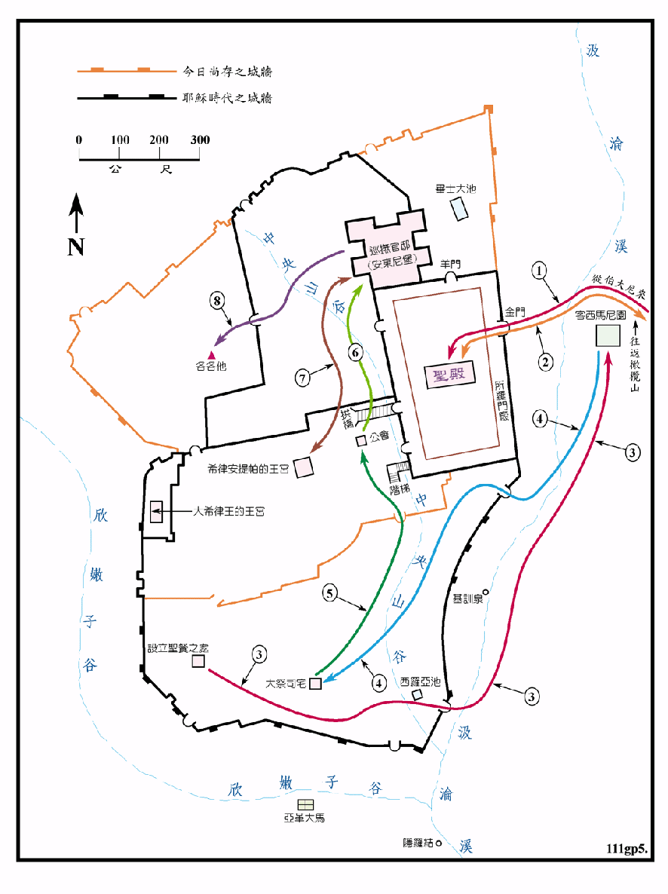

主后30年

行动线说明
| 序号 | 圣经 | 说明 |
|---|---|---|
| 1 | 太21:1-9，可11:1-10，路19:28-44，约12:12-19 | 逾越节前六天，耶稣从伯大尼骑驴荣耀的进入耶路撒冷，众人拿着棕树枝出去迎接他。 |
| 2 | 太21:10-26:13，可11:11-14:9，路19:45-22:2，约12:20-13:38 | 耶稣在耶路撒冷的前四、五天，每天早上就到圣殿里教训人，晚上就出城在橄榄山住宿。 |
| 3 | 太26:17-46，可14:12-42，路22:7-46，约14:1-17:26 | 逾越节前一晚，耶稣和门徒在城内吃逾越节的筵席，又设立了圣餐，然后去橄榄山上的客西马尼园祷告。 |
| 4 | 太26:47-75，可14:43-72，路22:47-65，约18:1-27 | 耶稣在客西马尼园祷告完毕后被捉，先带到大祭司的岳父亚那的住处审问，再押去大祭司该亚法处受审。彼得在屋外等候时，有三次否认认识主。 |
| 5 | 太27:1，可15:1，路22:66-71 | 第二天，天一亮众长老、祭司和文士聚集，把耶稣带到公会去审问，要治死耶稣。 |
| 6 | 太27:2-14，可15:2-5，路23:1-7，约18:29-38 | 犹太人把耶稣捆绑解去交给巡抚彼拉多，彼拉多在初步审问后，因耶稣是加利利人，就把耶稣给希律王安提帕去审理。 |
| 7 | 路23:7-11，23:15 | 希律王询问耶稣，耶稣却一言不答，希律王并没有查出耶稣甚麽罪来，就再把他送回彼拉多那里。 |
| 太27:15-31，可15:6-20，路23:13-26，约18:39-19:16 | 彼拉多再度审耶稣，然后三次宣告说：我没有查出他有甚麽该死的罪来，所以我要责打他，把他释放了，但在犹太人大声的催逼下，只有把耶稣交给他们，任凭他们的意思行。 | |
| 8 | 太27:32，可15:21-38，路 23:26-49，约19:17-37 | 耶稣被鞭打后，背着十字架，行走到各各他，被钉死在十字架上。可 15:21 古利奈人西门在半途为耶稣背十字架。 |
| 太27:57-60，可15:42-47，路23:50-56，约19:38-42 | 次日耶稣被埋葬在坟墓里。第三天复活。 |
耶路撒冷是主耶稣常到的地方，他每年都要到耶路撒冷守节，在他去世前的七天都是在耶路撒冷度过。耶路撒冷一直是犹太人的信仰和精神的中心，罗马帝国利用犹太人的公会作为统治的工具，罗马人所派的巡抚则是在该撒利亚设立政府，但在耶路撒冷也设有衙门，所以耶路撒冷也是当时的政治中心。大希律王在 17BC 开始重建圣殿，他扩大殿址，用巨石 墙基，这墙基西侧的一部份仍保留至今，就是哭墙。圣殿在10BC 前后竣工，是一处非常壮丽华美的巨构，馀下的建 物到主后廿五、六年才完成。
犹太人的公会是当时罗马帝国所准许成立的议会，是他们一种间接控制的工具，也赋予犹太人相当自治权。在耶路撒冷称大议会的议会则代表全国，由七十二位议员组成，有祭司长老和文士各廿四人，各代表圣殿、人民和律法。议长都是由大祭司担任，但要经罗马皇帝的任命，议员们多具有法利赛人或撒督该人的身分。大议会的权势甚大，除没有军权和不能判处死刑之外，广涉到宗教、法律、政治、税收、民事、刑事处理等问题。尤其是在宗教方面，其权威甚至可达国外的犹太人。在各地又有小议会，议员由廿三人组成，只处理地方性的各种事务。
当时在政治上，犹太人是受罗马人的统治，但他们心中并不接受罗马的政权，也不服希律王的管理。对他们真正有影响力的是圣殿里的祭司，是他们的宗教和精神领袖，大祭司又是公会的议长，所以除了在宗教的事务外，也处理民间的一些琐碎事务，具有无上的权威，所以对其统治者的罗马政府有极大的影响力，有时甚至可左右罗马的官员或巡抚，罗马的统治也必须借助其力，但是在另一方面，大祭司是罗马人所委派，也不具有利未人的血统，所以也必须仰赖罗马人的鼻息，作罗马人的傀儡。这种复杂的关系，可以从审理主耶稣的一事中看出端倪。
主耶稣设立圣餐和受审的大祭司住宅的确实位置都有争议，本图是按照传统的说法将其绘出，仅供参考。